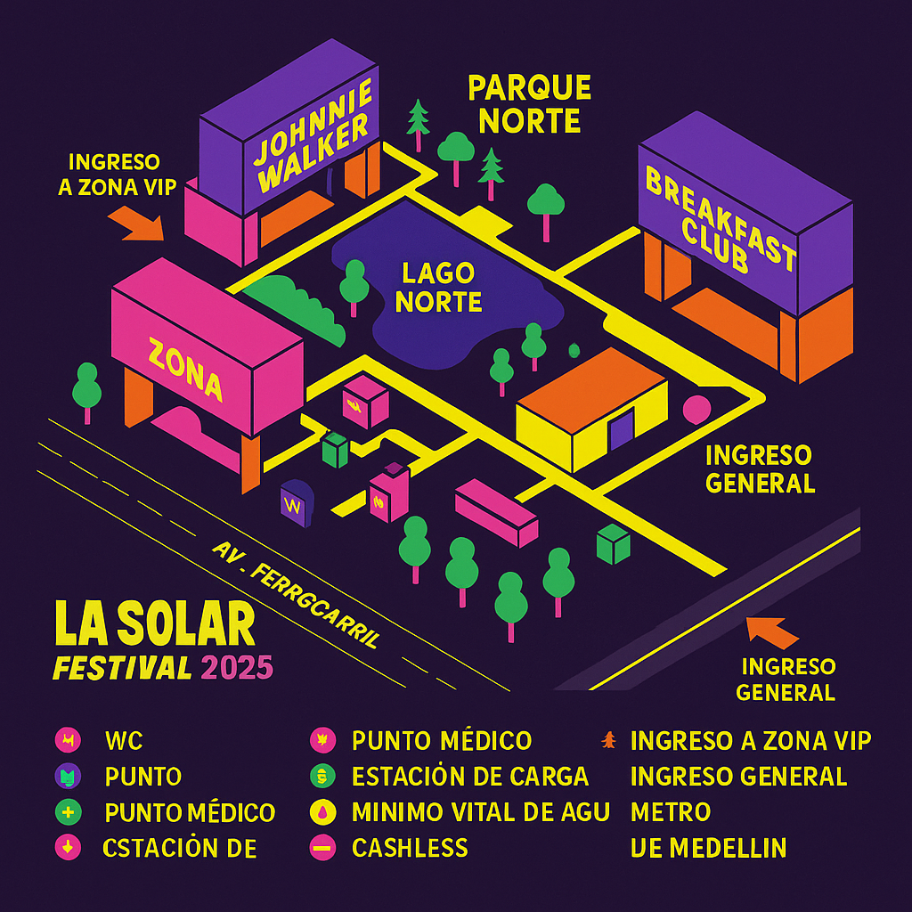
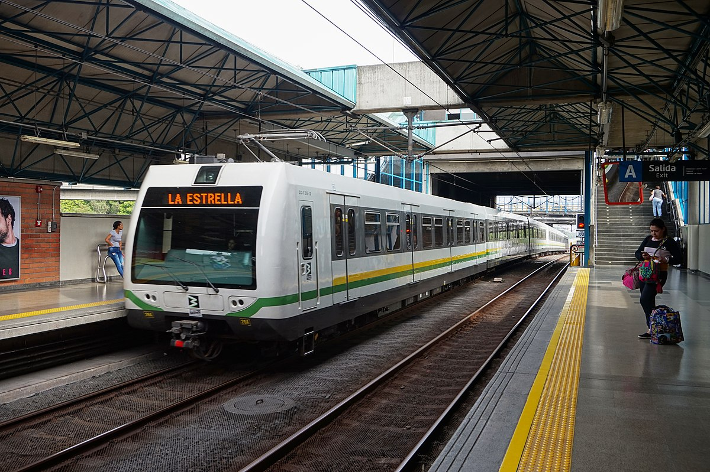
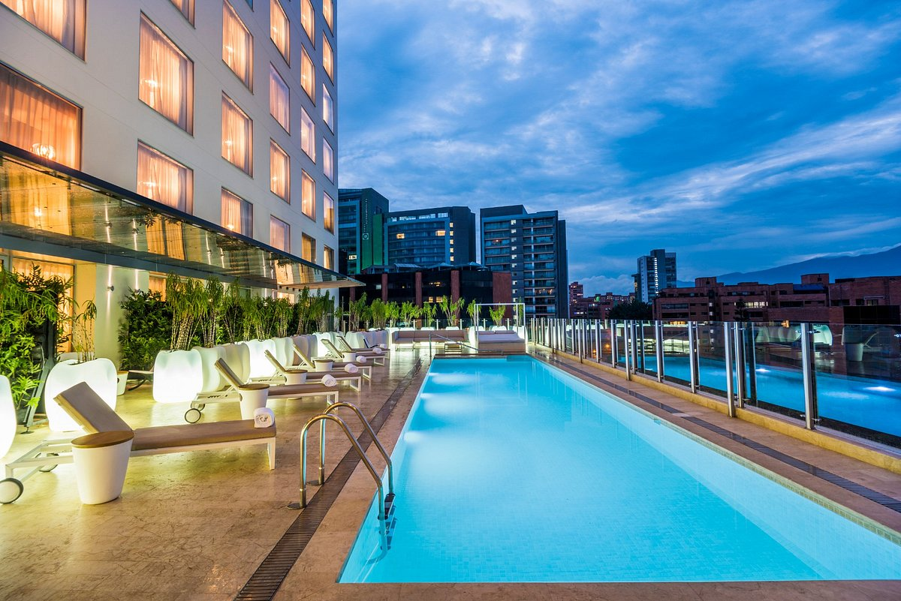
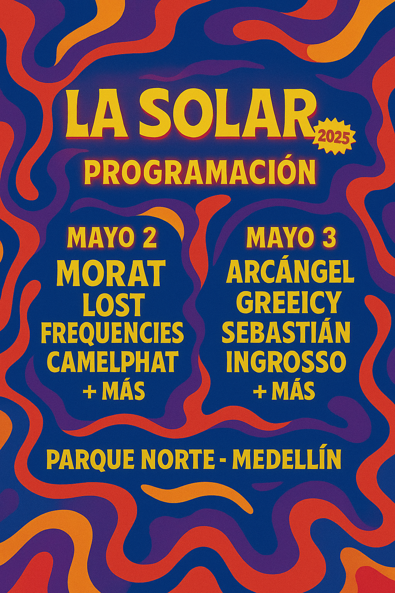

La Solar Festival Medellín 2025
Vibra con el evento musical y artístico más grande de Colombia. Arte, música, gastronomía y cultura en un solo lugar.
Compra tus entradas 🎟️¿Qué es La Solar?
La Solar es un festival multicultural que reúne los mejores exponentes de la música electrónica, pop, urbana y alternativa en Medellín. Ofrece una experiencia única con escenarios al aire libre, instalaciones de arte, gastronomía local y activaciones culturales.
¿Dónde se realiza?
El evento tiene lugar en el Parque Norte de Medellín, un espacio icónico en la ciudad, rodeado de zonas verdes y perfectamente conectado por el sistema de transporte público.
Información para turistas internacionales
El aeropuerto internacional José María Córdova conecta Medellín con las principales ciudades de América y Europa. Te recomendamos hospedarte cerca del centro o del estadio para un fácil desplazamiento.

¿Cómo llegar al festival?
Desde el aeropuerto puedes tomar taxi o bus hasta el centro. El sistema de metro te dejará en la estación Universidad, a solo 5 minutos caminando del Parque Norte.
Alojamiento recomendado
El hotel oficial del evento ofrece tarifas especiales para asistentes. También hay hostales y alojamientos en Airbnb en la zona centro y Laureles.
¿Por qué vivir La Solar?
- 🎶 Más de 30 artistas internacionales
- 🎨 Instalaciones artísticas y experiencias inmersivas
- 🍽️ Gastronomía local y zonas de picnic
- 🌍 Espacio seguro, inclusivo y sostenible
Programación destacada
Consulta la programación completa en la sección Artistas
- Viernes: Electrónica, House, Visual Mapping
- Sábado: Pop alternativo, Arte urbano y reguetón
- Domingo: Fiesta latina y cierre cultural
Lo que dicen nuestros asistentes
“Un ambiente mágico, lleno de arte y buena vibra.” – Camila, Argentina
“Lo mejor de Medellín en un solo evento.” – João, Brasil